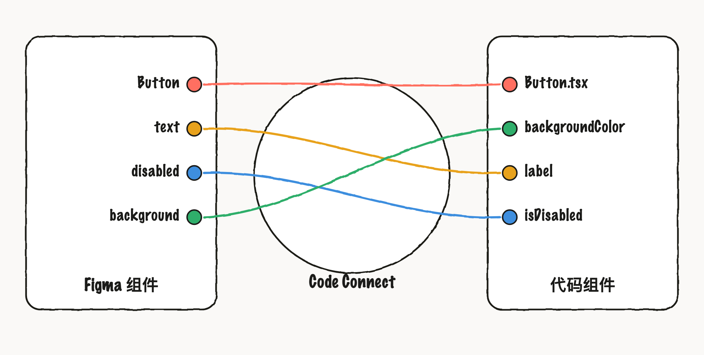
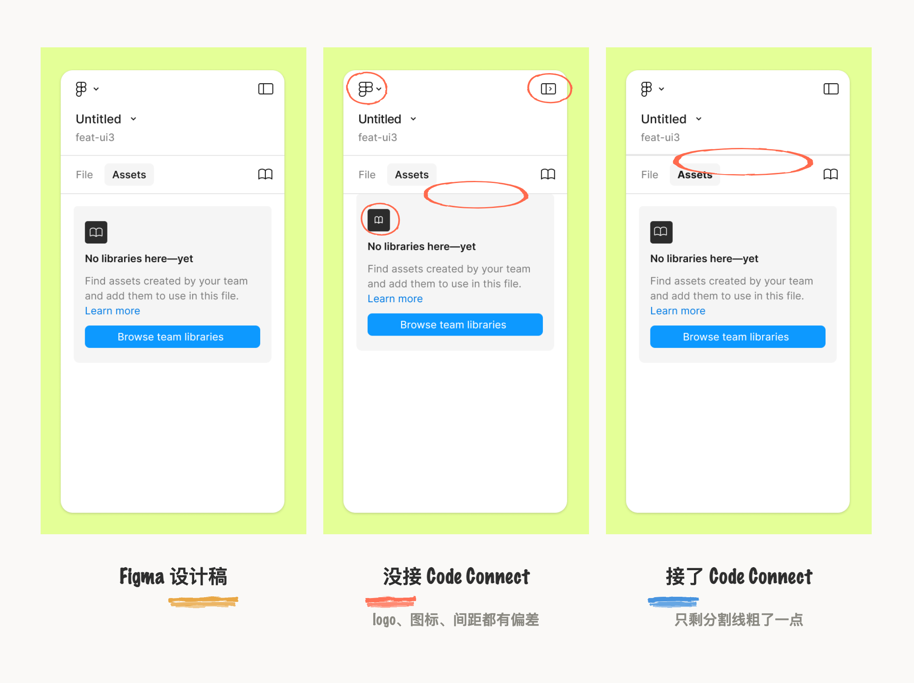
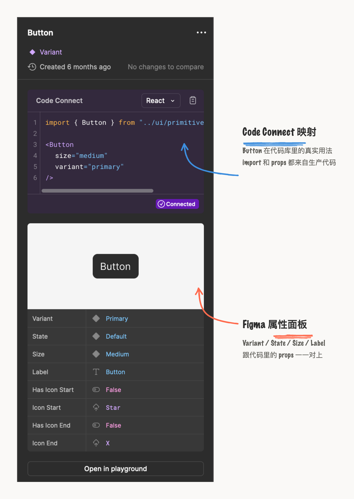

Coding agent 从 Figma MCP 设计稿生成前端代码时，经常不能 100% 还原设计样式，尽管设计师在 Figma 里已经事无巨细地整理好 Button 样式、文字字号、卡片布局、间距排版这些 componets 和 variables ，最终实现效果总是会出现各种各种、大大小小的不按设计规则来写样式的情况。
这类问题根源在于设计环境与代码环境不是同一种语言，而且 coding agent 读取 Figma 的设计稿时，缺少生产组件的上下文，它会从零重新搭建 UI 设计系统，自己开发基础元素、组件，生成看起来差不多的样式。这是一种模仿行为，实际上与代码库并不匹配，多个 agent 同时生成代码的场景下，情况更糟糕。
将设计环境与代码环境
转换为同一种语言
Figma 的 Code Connect 就是为了解决这个问题的，配置 Code Connect 后，同时连上 MCP 后可以获取到代码库中对应的 UI 代码和对应的更多上下文信息，这样就能顺着代码库中的逻辑去生成。

Code Connect 的配置是在项目里 npm 装一个 @figma/code-connect 安装包，放一份 figma.config.json，然后给每个要映射的组件写一个 .figma.tsx 文件，文件里写 Figma 组件链接、真实组件的 import、props 对应关系和使用示例。写完跑一条 npx figma connect publish 带上 personal access token 发布，Dev Mode 和 MCP 就都能读到这份映射了，各种代码格式 React、SwiftUI、Jetpack Compose、HTML 也都支持。
这里可以联想到 GitHub 的系统架构师 Lukas Oppermann 说过的：设计师和开发者说着"略有不同的语言"。这个语言差一直是设计系统的老问题，设计师在 Figma 里叫一个名字，开发者在代码里叫另一个名字，组件用法文档又是第三套说法，沟通成本一直在。Code Connect 的做法是让设计是和代码各自在最舒服的环境里工作，中间靠组件映射对齐，是一个非常平衡的解决方式。
映射配置后 Agent
生成效果只差了一条分割线
Figma 用了内部的 Pattern Library 做的测试用例，配置了 Code Connect 模板后，UI 实现的准确率提升了一个档次。三张都是同一个 Assets 面板，乍看几乎一样，仔细看能看出很大的差别。

没配置 Code Connect 的那张生成效果最差：左上角 logo 比例不对，右上角侧栏开关 icon 多了个箭头；内容卡片贴上了 tab 栏的分隔线，没加卡片上方的间距，libaray icon 也没画对。这就是因为 coding Agent 手动编写原始的 React 代码和 CSS 来实现 UI 元素样式，而且交互层面上，还无法点击操作。所以硬编码只是模仿了设计稿的外观，并没有实现交互逻辑。
而配置了 Code Connect 之后，只有一处错误。
同时，任务执行时间减少了19.6%、代码质量提高了一个档次、token 使用量减少了 29.5%。
与 Dev Mode、MCP 结合
一份映射多 Agent 可读
早在 2024 年 4 月，Code Connect 就上了 beta 版，但那时候的版本跟 AI 没什么关系，解决的是一个更老的问题：设计系统建了但没被充分用起来，开发者会无意中误用组件或者跳过组件库自己写。Figma 的 Dev Mode 能自动生成代码片段，但生成的是通用 CSS 和原生 React，跟团队自己的生产组件不一定完全对上。现在的 Code Connect 是让 coding Agent把 Figma 组件映射到自家组件库的真实用法，开发者可以从设计稿拿到正确的 import 和 props，大幅度减少 Agent 自己重构的概率。

配好映射之后在 Dev Mode 里选中这个 Button，检查面板的 Code Connect 区域显示的是团队自己组件库的真实用法，再往下是这个组件在 Figma 里的 props 面板，Variant、State、Size、Label 跟代码里的 props 一一对上，设计稿里调一个属性，开发者和 coding agent 拿到的代码片段就跟着变。
配置 Code Connect 也可以直接交给 Coding Agent 来处理，脸上 Figma MCP ，figma-code-connect 这个 skill 会自动生成配置模板文件，用.figma.ts 在代码库中生成文件，就可以使用 CLI 发布和使用。
这个配置具体来说，就是把一个 Figma 组件跟它对应的生产环境下的代码建立映射，写清 import 路径、props 对应关系和使用示例；之后而这个配置也需要跟着代码迭代同步更新，Code Connect 映射现在跟 design token、组件文档、Storybook 示例并列，成了设计系统团队又一样需要持续维护的产物。
本文数据和案例来自 Figma Better code, fewer tokens: The benefits of Code Connect in MCP 和 Unlocking the power of Code Connect。